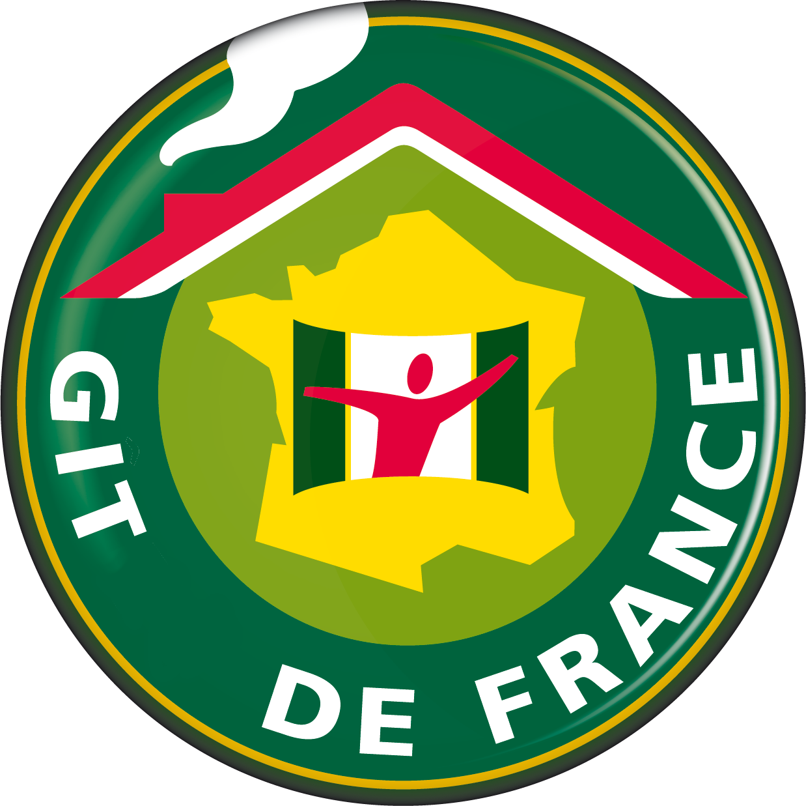
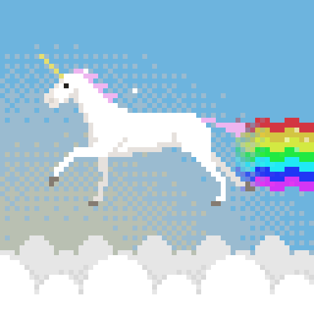

GIT

GIT


GIT != Github


git checkout -b <new-branch>
git push origin <branch>:<branch>git branch -d <branch>
git push origin --delete <branch>git rebase origin/developgit merge origin/feature-x
--no-ff--ff-onlygit reset --hard origin/xyz